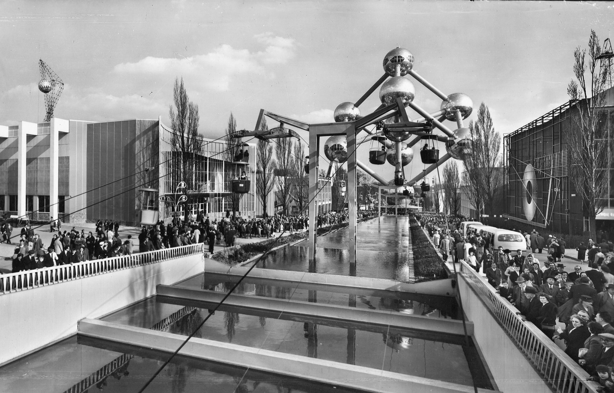

Over mij
Ik ben geboren in het jaar van de wereldtentoonstelling in Brussel, aka de expositie. Voor de ietwat jongeren die geen idee hebben waarover ik het heb, de expositie was in 1958. Dat heeft mij wel de tijd gegeven om twee dochters en een zoon op te voeden. Mijn dochters hebben inmiddels ook al elk twee kinderen.
Op jonge leeftijd heb ik veel gesport: basketbal en volleybal. Nooit op hoog niveau weliswaar, maar toch altijd met gedrevenheid. Zo'n twintig jaar geleden ben ik overgeschakeld op dansen. Voornamelijk koppeldansen, zowel ballroom als latin, genieten mijn voorkeur.
Een beetje geschiedenis
Na mijn humaniora ben ik nog een jaarlang het slachtoffer geweest van een verplichte legerdienst waar ik afgezwaaid ben als korporaal. Daarna ben ik aan de slag gegaan bij Sabena in de afdeling Operations. Daar heb ik de opstart van ons eigen computersysteem meegemaakt en als benjamin tussen een bende grijzende eminenties werd mij al gauw de taak van computer operator bij in de schoenen geschoven. Dat was wel leuk, maar toch enorm belastend omdat de dienst 24 uur per dag en 7 dagen per week draaide en er zonder computer weinig kon gewerkt worden.
Gebeten door de computermicrobe ben ik dan een graduaat programmeren in avondonderwijs gaan volgen.
Het talenpakket bestond uit Fortran, Cobol, Pascal en Assembler. Intussen grotendeels vergane glorie,
maar heel rechtaan rechttoe. Niet zo ingewikkeld als de moderne talen, maar uiteraard ook met veel
minder mogelijkheden.
Het eindwerk van mijn graduaat heeft wel een vrij complexe databank opgeleverd over alle luchthavens
van het Sabena-netwerk met vooral informatie over de startbanen. De verzamelde gegevens dienden voor
de berekeningen van het maximaal gewicht bij opstijgen voor alle in gebruik zijnde vliegtuigtypes.
Na een kleine 20 jaar bij
Sabena ben ik overgestapt naar IATA en
EUROCONTROL. Na een heel leuke start vond ik er niet echt mijn draai meer en ontdekte ik een nieuwe
passie: therapeut. Sinds 2003 heb ik mij vooral toegelegd op het helpen van mensen met angsten, emotionele
problemen en trauma's. Indien je geÏnteresseerd bent in wat ik doe, kan je een kijkje nemen op
mijn website  .
.
Waarom nog deze opleiding?
Men kan zich afvragen waarom ik op mijn leeftijd nog aan deze opleiding begonnen ben. Het diploma heb ik
35 jaar geleden al behaald, dus wat drijft me nog? Wel, het lijkt er op dat ik iemand ben die nieuwe
uitdagingen in het leven nodig heeft. Hoewel mijn huidige job mijn nog steeds boeit, is het na zo'n 20 jaar
toch gedeeltelijk routine geworden.
Toen we met mijn zoon naar de opendeurdag kwamen op de school, voelde ik meteen: "Dit wil ik ook!"
Na al die jaren wil ik het programmeren opnieuw in de vingers.
Op de pagina's van Thomas More
vind je alle informatie over de opleiding programmeren die ik volg.
Mijn ambities
Ik zie het eerder als een hobby en zie wel waar het mij brengt. Misschien start ik nog wat als freelancer
en mocht mijn zoon een eigen zaak opstarten, dan kan ik nog een handje helpen. Ik ben nog lang niet
afgeschreven...